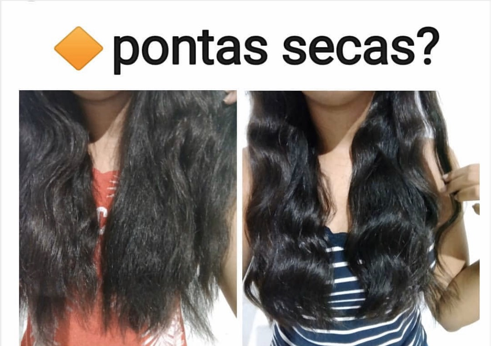

O pré poo foi uma invenção das gringas, e significa “antes do shampoo“. São tratamentos rapidos que você faz antes (ou até dentro!) do box e que vão proteger o seu cabelo do shampoo, mas, ao mesmo tempo, vão permitir que seu fios fiquem bem limpinhos.
Com cabelos secos passe o creme, oleos, da sua preferencia e deixe agir nos cabelos pelo menos 30minutos, apos isso lave os cabelos normalmente passando o shampoo somente na raiz elevando a espuma para o comprimento.
O pré-poo preserva muito as pontas dos seus fios! Pois além de doar nutrição, vai promover uma espécie de blindagem, prevenindo o ressecamento. Além disso, se você faz alguma química como alisamentos ou coloração, a duração será maior e você manterá a fibra capilar mais forte e menos suscetível à quebra